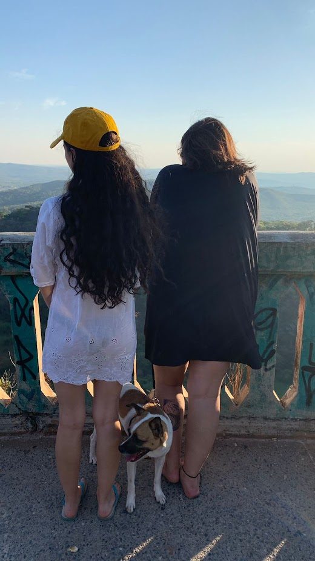
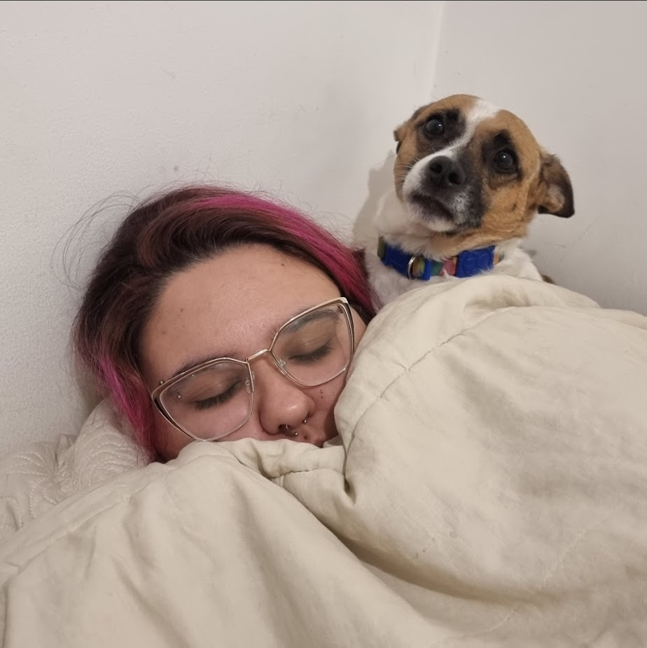
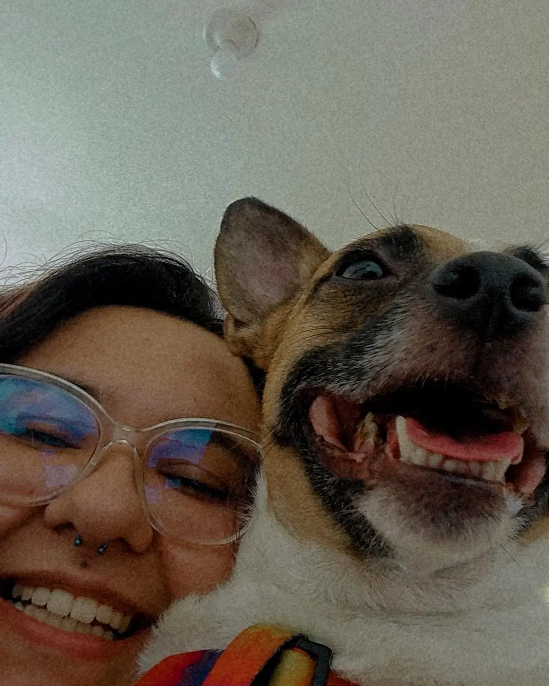
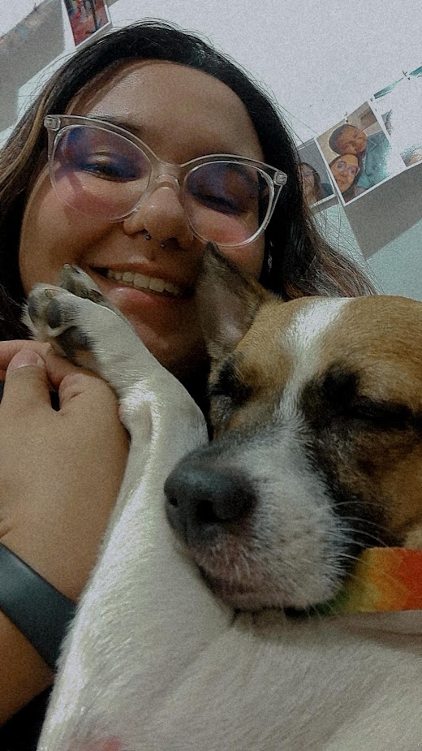
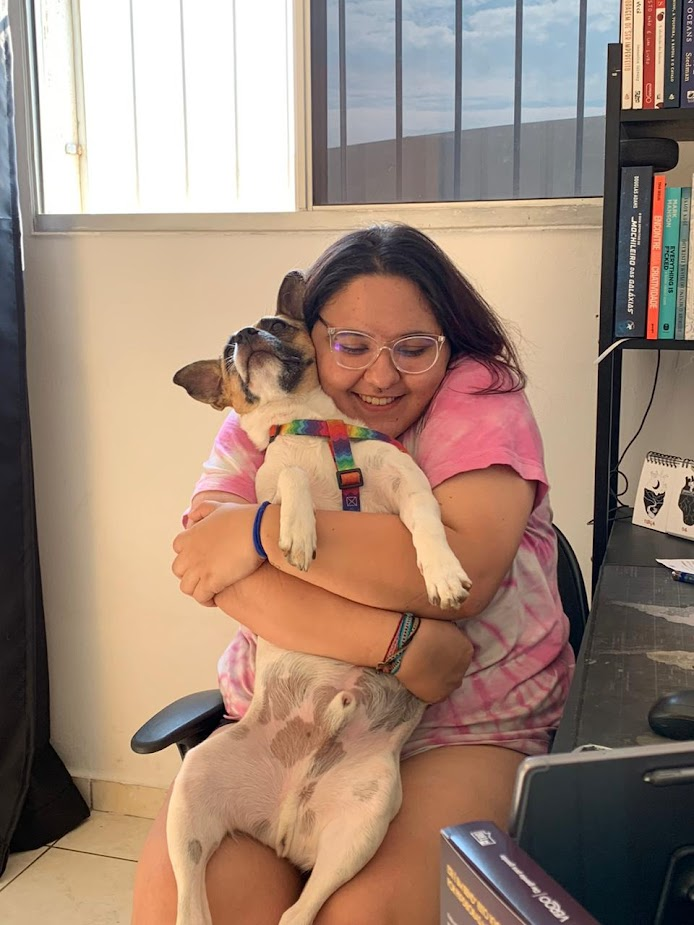
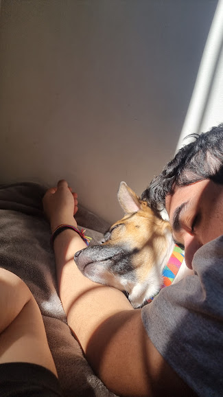
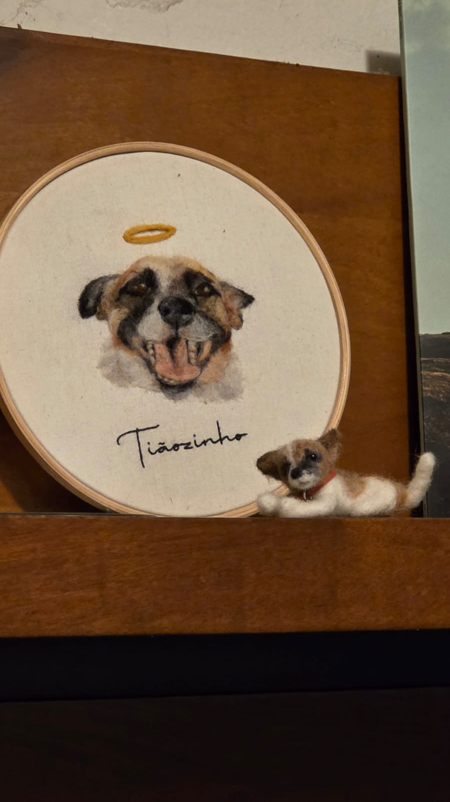
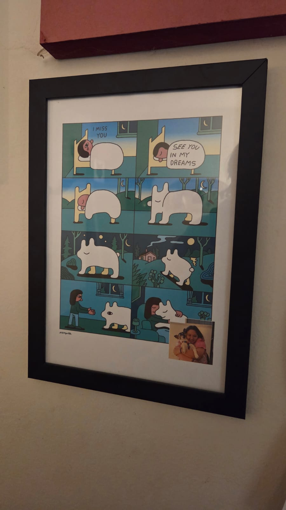
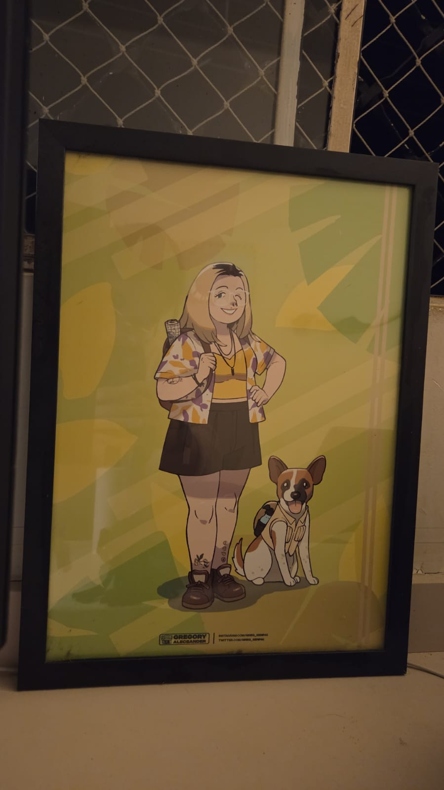

tiãozinho
o tiãozinho se tornou meu amigo quando eu entrei no ensino médio. ele vomitou no meu colo da primeira vez que andou de carro comigo, sujou meu uniforme da escola todinho. ele tremia que nem bambu, tinha o olhão esbugalhado.
eu queria muito ter um pet pra chamar de costela. pra mim, quando ele subiu no meu colo, o nome dele já era costela. eu passei os cinco primeiros dias tentando chamar ele de costela enquanto toda a minha família já tinha decidido, unanimamente, chamar ele de tião.
.jpg)
.webp)
.jpeg)
.jpg) olha a cara desse fdp kkkkkkkkkkkkk
olha a cara desse fdp kkkkkkkkkkkkk.webp)
.webp)
.png)
.png)
.png)
.png)
.png)
.png)
.png)
.png)






o motivo deles terem optado por chamar ele de tião eh toda uma história a parte, que vou tentar resumir um pouco aqui em atos:
- tínhamos 3 cachorros: theo, anastácia e chocolate;
- em determinado dia, eles tavam indo pro vet na van, o vet deu mole, os cachorros correram, o theo e a babalu foram encontrados no mesmo dia, a anastácia sumiu por 15 dias;
- achamos que tínhamos perdido a cachorra;
- ela foi encontrada com um novo amigo no centro de Contagem;
- ela foi encontrada pelo Tião, segurança do vet
daí o nome!!
quando eu morava com meus pais, eu e o tião aprontávamos muito juntos - ele gostava de ir na janela do meu quarto de madrugada pra dormir no quarto comigo, mas eu deixava a janela semiaberta pra ele pular antes da minha mãe vir acordar a gente. eu fazia a caminha dele embaixo da minha mesa e deixava ele ficar escondido no quarto. quando fui morar sozinha, levei ele comigo. demorei uns meses, mas ele veio pro apartamento e virou o cachorro mais mimado do mundo, dormindo no colchão, comendo sachê e todas as bobeiras que eu conseguia dar.
cresci muito junto com esse cachorro e considero que ele foi meu amiguinho mesmo, de quatro patinhas. ri muito com o quão expressivo ele inadvertidamente era. chorei conversando sozinha em casa muitas vezes desabafando sobre minhas agonias pro tiãozinho. meus amigos adoravam ele, ele era maluco.
perdi o tiãozinho muito cedo. ele tinha muita vidinha pra viver e muita bagunça pra fazer ainda. mas ele deu o azar de estar no lugar errado quando alguns cachorros de briga foram soltos e, apesar de ter ficado uns dias no vet, não conseguiu se recuperar.
sinto muita falta do meu amigo e queria que ele pudesse conhecer todas as coisas lindas que esse mundo tinha pra dar pra ele.
hoje em dia, temos alguns cantinhos reservados em casa e no nosso coração pra lembrar do tiãozinho.



comente "tiãozinho você sempre será famoso"
não foi possível carregar os comentários agora.